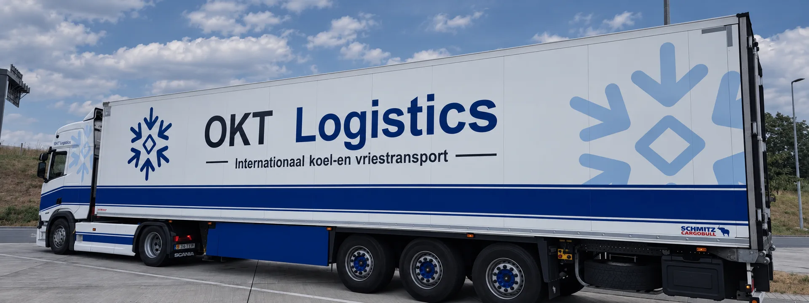

Productspecificatie overdragen
Zorg dat afzender, vervoerder en ontvanger dezelfde temperatuurinstructie gebruiken. Vermeld de productsoort en relevante laad- en losinstructies.
Voor internationale diepvriesstromen combineert OKT Logistics temperatuurbeheersing met heldere laad- en losplanning.

Zorg dat afzender, vervoerder en ontvanger dezelfde temperatuurinstructie gebruiken. Vermeld de productsoort en relevante laad- en losinstructies.
Voor een grensoverschrijdende diepvriesrit worden beide adressen, de afstand en de beschikbare laad- en losmomenten samen beoordeeld.
Een losse rit en een terugkerende stroom vragen een andere capaciteitsafspraak. Vermeld frequentie, verwachte volumes en de flexibiliteit in de planning.
Een internationale diepvrieszending vraagt om heldere productafspraken en praktische informatie over beide locaties.
Internationaal vriestransportGeef het type diepvriesproduct, de gewenste temperatuur en de verpakkingswijze door. De productspecificatie vormt het uitgangspunt.
Vermeld volledige laad- en losadressen, contactpersonen en beschikbare tijdvensters. Zo kan de internationale rit passend worden gepland.
Geef laadreferenties en instructies van de ontvanger vooraf door. Stem af welke vervoers- en productdocumenten nodig zijn.
Heldere afspraken vooraf en direct contact wanneer er onderweg iets afgestemd moet worden.
Stuur laadadres, losadres, datum, temperatuur, aantal pallets en gewicht. Zo kan OKT Logistics snel beoordelen welke transportoplossing past.
De temperatuurafspraak volgt dezelfde basis. Deze pagina gaat specifiek over de grensoverschrijdende planning; op de algemene vriestransportpagina vindt u de product- en temperatuuruitleg.
Ja. Stuur de gewenste dagen, routes en volumes. Beschikbaarheid en uitvoering worden vervolgens afgesproken; een aanvraag is nog geen capaciteitsgarantie.
Een aanvraag is vrijblijvend. Operations beoordeelt route, capaciteit en productcondities.